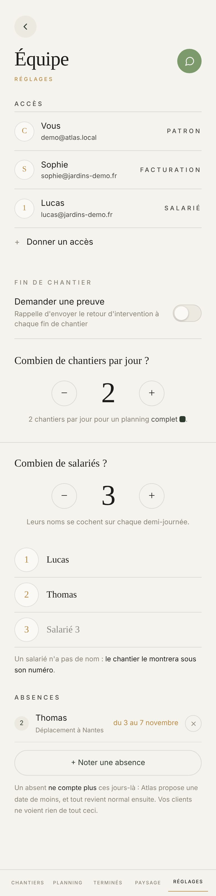
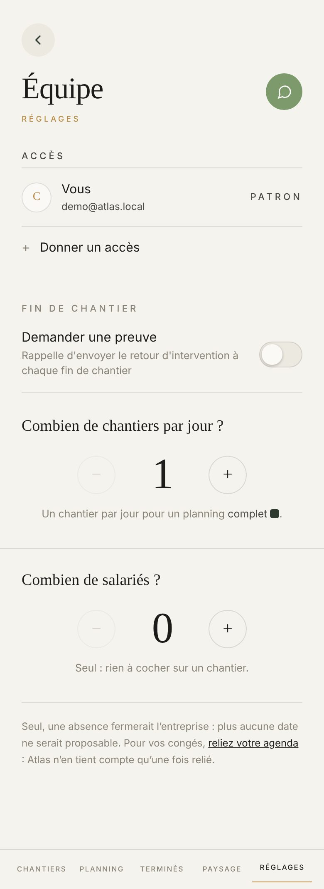

Proposé
Plus loin
Aujourd'hui


Ce qui change
- Cinq paquets dans l'ordre d'aujourd'hui : Accès, Fin de chantier, les deux compteurs, Absences. Chacun dans sa plage, sous un titre doré ou sous sa question.
- Chaque compte dit son rôle dans une pastille, Patron en or. Le nom passe en gras.
- Toucher un compte ouvre SA page, comme Nouveau compte : son rôle, ce qu'il pourra et ne pourra pas, C'est qui, ce qu'il voit du planning, Retirer l'accès. Aujourd'hui tout cela s'ouvre sous sa ligne, au milieu des autres.
- Pourra et Ne pourra pas passent l'un sous l'autre, en 15 px au lieu de deux colonnes en 13,5 px : Pourra sur une plage verte avec ses coches, Ne pourra pas avec ses cadenas.
- Les titres de paquet en or, comme sur le sommaire ; les petits libellés (C'est qui, Ce qu'il voit du planning, Pourra) en toutes lettres, au lieu de capitales espacées de 9,5 px.
- Noter une absence garde sa pilule aux bouts ronds, comme dans l'appli d'aujourd'hui (sa demande du 26 octobre).
- Devant chaque nom de salarié, son rond en or ; la date d'une absence en or sous le nom, et la croix grandit à 44 px.
- Seul, la phrase de l'agenda devient une plage qui se touche tout entière.
- Créer le compte reste le seul bouton plein, posé au-dessus de la barre.
- « ABSENCE » en capitales au-dessus de « Qui n'est pas là ? » part : la question suffit.
- La phrase de la feuille ne dit plus « Thomas sera absente » (aujourd'hui elle met le féminin à tout le monde) : elle s'écrit « Absence de Thomas du 3 au 7 novembre », juste pour chacun.
Plus loin
- L'écran coupé en cinq lignes, comme Devis & factures : chaque ligne dit déjà ce qu'elle porte (qui a accès, la preuve demandée, 2 chantiers, les quatre noms, l'absence de Thomas).
- Touchez une ligne : son paquet s'ouvre seul, le rond du haut ramène au sommaire.
Ce qui ne bouge pas
- Les deux questions en serif et leurs compteurs ; « 2 chantiers par jour pour un planning complet » et le petit carré après le mot. Touchez le moins et le plus : le chiffre bouge dans la phrase.
- Les noms se tapent sur leur ligne, et un salarié sans nom s'annonce sous son numéro. À zéro, le bloc des noms et les absences disparaissent : touchez « Seul, sans salarié », ou descendez le compteur.
- Trois rôles sur une ligne, Patron à part avec « Tout, comme vous ». Le rôle choisi est teinté et coché, jamais plein, et la liste suit le rôle : touchez Commercial.
- « Au moins une photo » n'existe que si « Demander une preuve » est allumé.
- Ce qu'il voit du planning, seulement pour un salarié ; on ne se retire pas soi-même ; l'œil de chaque mot de passe ; la phrase « Retiré de … » quand un congé défait une affectation.
- Un commercial ou un salarié n'ouvre pas Équipe ; sans la formule Entreprise, les absences et la fin de chantier laissent leur place à « Les absences sont dans Entreprise ».
À trancher
- Proposé, une seule page en cinq paquets, ou Plus loin, cinq lignes qui s'ouvrent.
- Un compte qui s'ouvre sur sa page, ou qui s'ouvre sous sa ligne comme aujourd'hui.